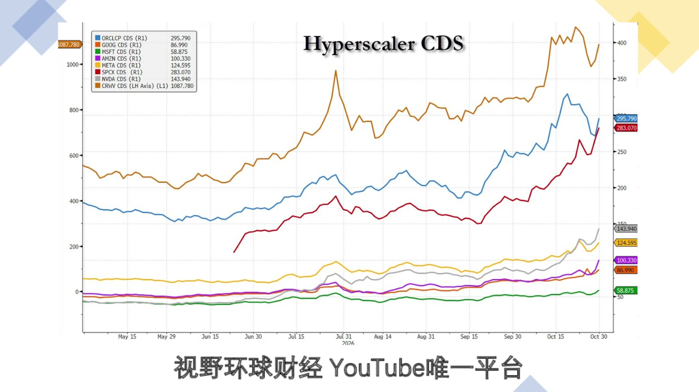
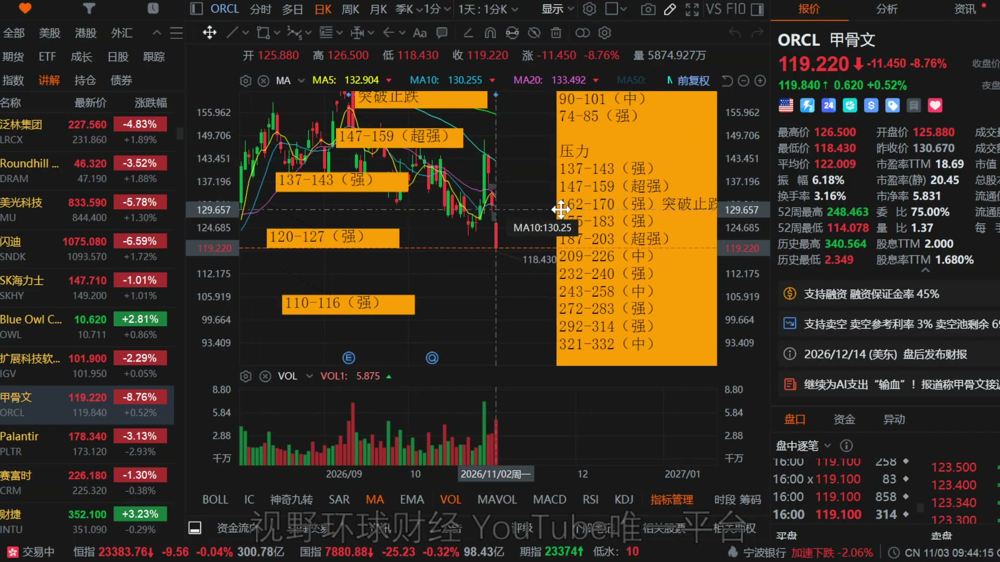
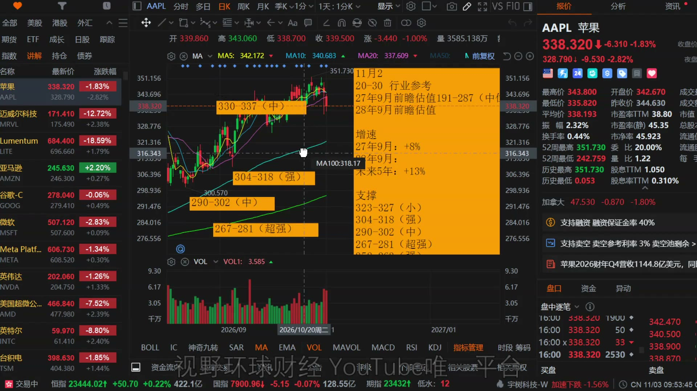
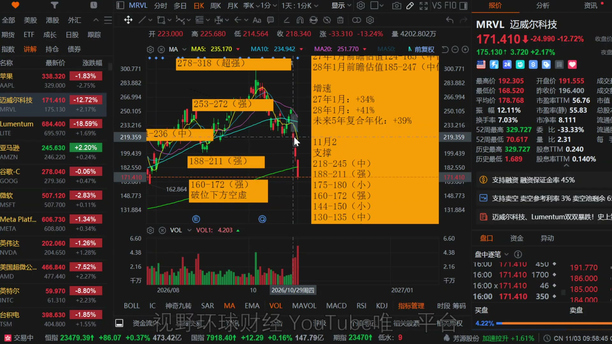
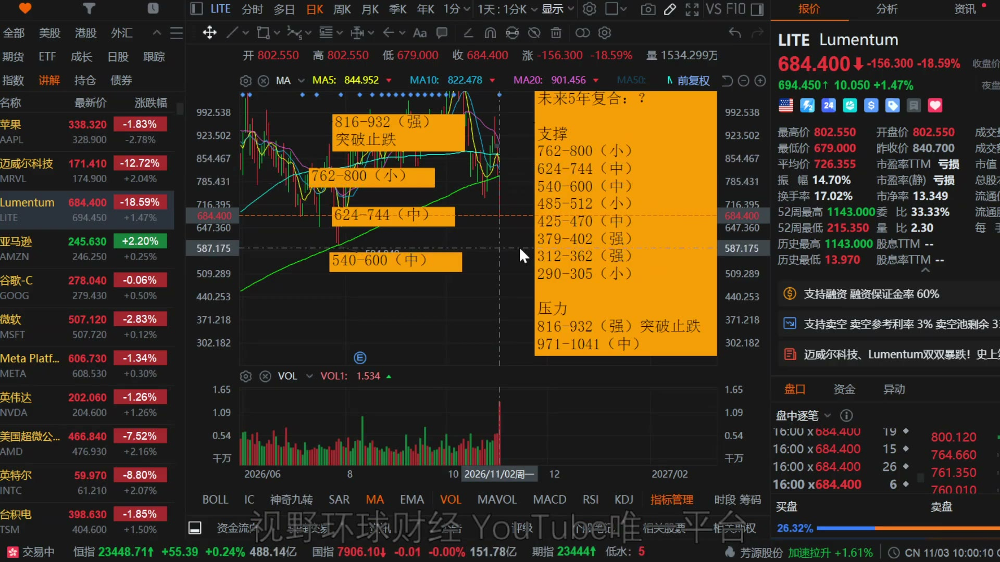
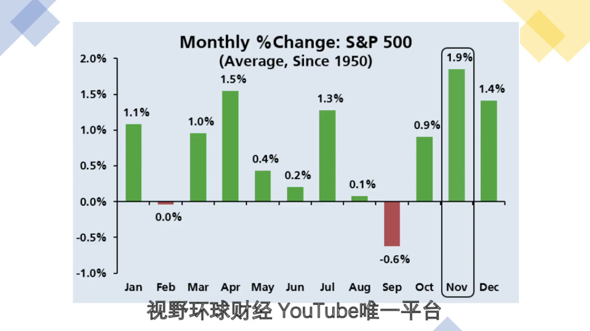

美股 AAPL多个增速放缓！ORCL再融资，信贷雪上加霜！MRVL收购LITE，双方股东都不满意！基金损失惨重，多头仓位保守！本期重点6 组 · 31 条市场与数据中心4ORCL 与信用7AAPL7MRVL / LITE 换股4MRVL / LITE 点位4基金仓位与季节性5市场与数据中心科技权重承压，信用与监管风险叠加；板块内部仍有分化。4 条高开跳水纳斯达克100从 +1.2% 转为 −1.3%，收盘跌破上周五低点，科技反弹仅持续约一小时。▶回听00:09—00:49对应正文 ↗市场宽度标普成分股 347涨、155跌，等权指数 +0.76%；指数弱势不等于全面普跌。▶回听00:50—01:10对应正文 ↗监管风险美银报告所述 36场州长竞选中20场提出暂停或终止数据中心相关主张；仍需看选举后实际政策。▶回听11:56—14:09对应正文 ↗德州许可德州规划容量大，许可证面临 审计、暂停甚至冻结；选举后是否重启仍不确定。▶回听12:32—13:19对应正文 ↗ORCL 与信用融资节奏和客户回款压低估值容忍度，低估不能脱离信用条件。7 条债与股双融资发行 100亿美元债券，同时准备 100亿美元普通股融资；长期债券初步溢价约3.6个百分点。▶回听02:09—02:44对应正文 ↗承诺与股价四年额外融资上限 200亿美元，短期内即对应全部额度；此前涨至 148.48美元，四个交易日后约119美元。▶回听02:45—04:24对应正文 ↗CDS风险排序上周五画面：CRWV约1088、ORCL约296、SpaceX约283；MSFT约59。注意图中CRWV使用不同纵轴。▶回听06:12—07:53对应正文 ↗信用筛选特别留意 CDS超过200、300或400点的标的；信用风险阈值属于当时观察口径，不是统一评级分界线。▶回听06:38—08:46对应正文 ↗趋势条件较大上行行情需先 越过170美元；上方密集压力压缩反弹空间。▶回听09:23—09:49对应正文 ↗图示点位收盘约 119.22美元；近端120—127已失守，下看 110—116；上看 137—143、147—159、162—170。▶回听09:23—10:21对应正文 ↗估值前提偏低估值成立的条件是 客户账单能够回款；客户融资困难会使市场不敢足额计入远期收入。▶回听09:49—10:21对应正文 ↗AAPL现金流与信用稳健，但服务增速和价格容错需要分开判断。7 条总量与分化营收 1144.8亿美元、+12%，EPS 2.10美元均超预期；iPhone与Mac增长，iPad和可穿戴等下滑。▶回听15:06—15:57对应正文 ↗服务放缓服务收入 315.7亿美元、+9.8%，增速降至2023年二季度以来最低，并首次低于10%。▶回听15:58—16:29对应正文 ↗区域与利润率大中华区收入虽 +21%仍未达预期，日本 −1.4%；整体利润率降至 47.9%的一年低位。▶回听17:00—17:42对应正文 ↗现金流支撑全年经营现金流 1451亿美元、+30%，资本支出127亿降至90亿，自由现金流约 1360亿、+38%。▶回听17:54—18:39对应正文 ↗年度估值按 20—30倍参考，2027年9月财年前瞻 191—287美元，中位239；2028年上沿约310—320为粗估。▶回听18:40—19:12对应正文 ↗价格透支正股约338、盘后约328美元，已跑在一年期前瞻估值之上；320美元已接近粗估的2028年上沿。▶回听18:56—19:31对应正文 ↗图示支撑支撑依次为 323—327（小）、304—318（强）、290—302（中）、267—281（超强）美元，与财年估值分开使用。▶回听18:40—19:31对应正文 ↗MRVL / LITE 换股固定换股数量，价值随股价变化，远期协同仍需审批和时间。4 条双双大跌收购消息确认后，MRVL −12.72%、LITE −18.59%，被收购方跌得更深。▶回听19:44—20:19对应正文 ↗换股比例全股票交易，1股LITE换4.5股MRVL；原股东预计分别持有合并公司约33%与67%。▶回听20:24—21:00对应正文 ↗兑现时间预计 2028年上半年完成，需股东和监管批准；管理层称完成后一年内EPS增厚，年化成本协同 超过10亿美元。▶回听21:02—21:42对应正文 ↗联动估值固定的是 4.5股的数量，不是美元金额；交易前单体估值不能直接视作合并后估值。▶回听21:44—23:35对应正文 ↗MRVL / LITE 点位关键支撑与止跌条件，要和换股交易联动观察。4 条MRVL关键区160—172美元强支撑，约160要守住；跌破后下方支撑偏弱，可能加速下滑；守住只作为阶段底部观察。▶回听24:29—25:10对应正文 ↗MRVL下方图中下方为 144—150（小）、130—135（中）美元，不能机械当成买点。▶回听24:29—25:10对应正文 ↗LITE图示区间收盘约684.40位于 624—744美元区间；下方 540—600，上方 816—932强压力，突破止跌。▶回听25:16—26:17对应正文 ↗联动期限任意一方重大异动都可能影响另一方；联动观察持续到 交易完成或被否决。▶回听25:35—26:23对应正文 ↗基金仓位与季节性净多头低可能提供回补动力，但要等趋势变化，不能仅凭季节性押方向。5 条总杠杆不等于看多总杠杆 314.1%（五年97百分位），净杠杆 73.6%（一年10百分位）；多空比 1.612（五年2百分位）。▶回听27:00—27:38对应正文 ↗回补的条件趋势转变后的空头回补或挤空可能助涨；若市场继续下行，高空头敞口也可以继续获利。▶回听27:59—28:50对应正文 ↗十月收益基本面多空 −3.3%；科技媒体电信基金 −11.9%；系统性多空 −3.7%，科技受损更重。▶回听29:02—29:36对应正文 ↗历史均值1950年以来，标普11月平均 +1.9%、12月 +1.4%；平均值不意味着每年都上涨。▶回听30:24—31:07对应正文 ↗大盘修正纳指高点回撤刚超过约 10%、接近修正区；标普仅回落几个百分点，仍应区分指数与个股风险。▶回听32:13—32:33对应正文 ↗这期涉及哪些股票与内容？ORCL主讲再融资、客户回款、CDS与密集支撑压力。AAPL主讲财报业务与区域分化、现金流、年度估值及支撑区间。MRVL主讲全股票收购LITE、换股估值变化及160—172关键支撑。LITE主讲4.5股MRVL固定换股、联动风险、624—744与816—932区域。CRWV对比在CDS对比中用于观察信用风险与融资环境；并非独立技术分析。NVDA对比在CDS对比中用于观察信用风险与融资环境；并非独立技术分析。META对比在CDS对比中用于观察信用风险与融资环境；并非独立技术分析。AMZN对比在CDS对比中用于观察信用风险与融资环境；并非独立技术分析。GOOG对比在CDS对比中用于观察信用风险与融资环境；并非独立技术分析。MSFT对比在CDS对比中用于观察信用风险与融资环境；并非独立技术分析。背景提及：无。市场指标：NDX、SPX、CDS。背景提及不代表对该股票展开分析。CHAPTER 01 · 回听 00:00科技股高开跳水，指数下跌背后仍有结构分化美东时间 2026 年 11 月 2 日晚，11 月首个交易日的市场仍然偏弱。盘前油价期货大幅回落，推动美股高开，但科技股反弹只持续了约一小时。10 点半以后抛售延续，纳斯达克 100 指数从上涨约 1.2% 转为下跌约 1.3%，收盘跌破上周五低点。新云数据中心与半导体股票的跌幅尤其明显。标普内部并非普跌：347 只成分股上涨、155 只下跌，等权重指数上涨 0.76%。科技和能源表现较差，其他成分股相对较好。因此，指数承压与多数成分股上涨可以同时发生，不能只凭指数涨跌判断市场的全部状况。科技股跳水的部分原因来自信贷市场进一步恶化。ORCL 再融资、数据中心信用风险和中期选举的不确定性相互作用，但 ORCL 只是联动中的一部分，不能把当天的下跌完全归因于一家公司的消息。CHAPTER 02 · 回听 01:28ORCL 再融资：额度迅速使用，股东重新评估承诺据当天彭博报道及节目提及的 SEC 文件，ORCL 启动 100 亿美元投资级债券发行，分六期，期限从两年到二十年不等；最长期限债券的初步定价预计较美国国债收益率高约 3.6 个百分点。同时，公司还准备发行 100 亿美元普通股。上周三，公司曾提出将 2027 至 2030 年期间的额外融资规模限制在 200 亿美元以内，其中股权融资与债务融资各 100 亿美元。消息推动股价当天大涨约 10%，盘中触及 148.48 美元；四个交易日后，股价却回落到约 119 美元，甚至跌破投资者日之前的水平。问题在于融资节奏：短短几天后，100 亿美元债券加上计划中的 100 亿美元股票融资，就对应了此前四年融资上限的全部额度。后面是否仍会遵守这一上限，目前无法确认；如此快地使用额度，也让市场重新审视承诺的可信度。今年 2 月，公司曾提出高达 500 亿美元的融资计划，并表示当年不再发债；当月出售了 250 亿美元债券，今天又启动年内第二次债券发行。在我的理解里，这与此前承诺之间存在疑问。公司或许会把新债解释为旧债再融资或置换，但新增 100 亿美元股票融资不能简单等同于债务置换。股东既要面对潜在稀释，也要重新考虑后续融资需求。CHAPTER 03 · 回听 06:12CDS 接近高位，估值之外要看融资与回款图中的 CDS 数据截至上周五，并非 11 月 2 日收盘后的最新数值。按画面列示，CoreWeave（CRWV）约 1087.78 点，ORCL 约 295.79 点，SpaceX 约 283.07 点，NVDA 约 143.94 点，META 约 124.595 点，AMZN 约 100.33 点，GOOG 约 86.99 点，MSFT 约 58.875 点。当日市场变化后，部分 CDS 又进一步上升。CDS 越高，债券违约保护的保险成本越贵，反映市场对信用风险的担忧越强。我会特别留意超过 200 点、甚至达到 300 点或 400 点的数据中心相关标的，ORCL 的约 295 点可以作为比较参照。这里的阈值是当时的风险观察口径，并非信用评级的统一分界线；节目此前引用的 CoreWeave 五年违约概率约 63%，也属于当时的定价估算，不能理解成已确定会违约。谷歌也计划通过欧元债发行筹集约 60 亿欧元，融资活动本身会影响市场对信用的定价。选股时除了盈利预测，还要追踪 CDS、信用评级和融资能力；尤其是小型数据中心公司，不能只看业务增长而忽略资金链。放大查看 ↗数据中心及科技公司 CDS：截至上周五的画面原视频 07:30回听此处CHAPTER 04 · 回听 09:23ORCL 点位：170 上方才谈较大上行，低估仍有前提ORCL 上方压力和下方支撑都很密集，价格容易被压缩。要讨论较大的上涨行情，首先需要越过 170 美元；以当时约 119 美元计算，距离这一位置仍然很远。图中近端标注为 120—127 美元强支撑区，收盘约 119.22 美元已在其下方；下方还有 110—116 美元强支撑。上方标注 137—143 美元强压力、147—159 美元超强压力，以及 162—170 美元强压力，突破 170 才对应图示的止跌观察条件。更下方图注还列有 90—101 美元中等支撑和 74—85 美元强支撑。按估值看，我认为 ORCL 已明显偏低，但这个判断成立的前提是客户账单最终能够收回来。OpenAI、Anthropic 等客户的上市融资预期，已不如之前乐观；市场担心的正是未来回款，因而不敢把部分订单收入完整计入估值。股价偏离估值，不等于市场完全忽略了增长，也可能是在折价融资与信用风险。放大查看 ↗ORCL：密集压力与支撑，170 上方的止跌观察原视频 09:50回听此处CHAPTER 05 · 回听 10:44数据中心监管：州长竞选与电费压力形成另一重约束中期选举结果尚未明朗。部分州可能很快完成计票，竞争激烈或计票较慢的州则可能需要数天甚至数周，不能提前把结果当成事实。美国银行公共事业团队的一份报告提到，周二投票涉及的 36 场州长竞选中，已有 20 场提出暂停或终止数据中心相关项目的主张。背景是电费与公共事业账单上涨，候选人需要回应选民压力；这些竞选主张并不等于相应限制已全部落地。德州在全美规划的数据中心容量中占比很大。现任州长此前把德州定位为人工智能发展中心，但过去三个月，随着选情变化和居民反对声浪提高，开始对数据中心许可证采取审计、暂停甚至冻结等措施。选举后是否重启、怎样重启，仍需继续观察。AI 投资已是美国经济增长的重要支撑，但它与电费、公共资源和监管约束之间存在博弈。最终是更重视发展，还是优先控制公共事业账单，抑或采取折中方案，要看选举后各州的实际表态。当前监管紧张，也就进一步压低了数据中心板块的风险偏好。CHAPTER 06 · 回听 14:30AAPL 财报：总收入超预期，多条增长线放缓AAPL 第四财季营收为 1144.8 亿美元，同比增长 12%，超过预期的 1134.7 亿美元；每股收益 2.10 美元，高于去年同期的 1.85 美元，也超过预期的 2.00 美元。这是新任首席执行官上任后的第一份财报，整体表现并非很差，但细分业务存在分化。iPhone 收入 575.8 亿美元，同比增长 17%，超过预期的 564.9 亿美元，但增速较此前放缓。Mac 收入 107.9 亿美元，同比增长 24%，超过预期的 97 亿美元。iPad 收入 62.3 亿美元，同比下降 10%，低于预期的 68.9 亿美元；可穿戴、家居和配饰收入 83 亿美元，同比下降 7.9%，也低于预期的 90 亿美元。服务收入为 315.7 亿美元，同比增长 9.8%，略低于预期的 315.8 亿美元。服务增速降至 2023 年第二季度以来最低，并首次低于 10%；这条原本被寄望加速增长的业务，本季表现一般。区域方面，美洲营收 486.8 亿美元，同比增长 10%，超过预期的 485.1 亿美元；欧洲 320.1 亿美元，同比增长 12%，超过预期的 302.1 亿美元；亚太其他地区 97.1 亿美元，同比增长 15%，高于预期的 90.2 亿美元。大中华区收入 175.4 亿美元，同比增长 21%，却低于预期的 187.5 亿美元；日本收入 65.4 亿美元，同比下降 1.4%，低于预期的 73 亿美元。增长与超预期不能混为一谈，大中华区和日本是区域表现中相对较弱的部分。服务利润率仍稳健，但产品利润率降至一年来最低，带动整体利润率降至 47.9%，同样是一年低位。季度末现金及现金等价物为 363.1 亿美元，同比增长 1%，低于预期的 467.9 亿美元。全年经营现金流增长 30% 至 1451 亿美元，资本支出从 127 亿美元降至 90 亿美元，自由现金流约 1360 亿美元，同比增长 38%。AAPL 没有加入数据中心资本支出的军备竞赛，现金流仍有支撑。股票回购金额为 864 亿美元，较 2025 年同期的 907 亿美元有所缩减；我倾向于理解为，股价持续上涨时，公司不急于用更大规模回购托底。CHAPTER 07 · 回听 18:40AAPL 估值与点位：信用稳定，但价格已提前走远按 20—30 倍行业参考区间，我对 2027 年 9 月财年的前瞻估值测算为 191—287 美元，中位约 239 美元。2028 年 9 月的预测仍较遥远，需要继续调整；若按百分之十几的增长粗估，估值上沿增加约 30 美元，大致对应 310—320 美元。当时正股约 338 美元、盘后约 328 美元，已经越过一年期前瞻估值；约 320 美元在我的粗略测算中已接近 2028 年 9 月估值上沿。持有者可以结合自身情况继续评估，但没有持仓、准备追高的人需要慎重。AAPL 的信用很稳定、有现金，并不意味着任何价格都具有同样的容错。点位图列出 323—327 美元小支撑、304—318 美元强支撑、290—302 美元中等支撑，以及 267—281 美元超强支撑。图中还有 330—337 美元中等区域标注；这些是当时的技术位置，不能与 191—287 美元的财年估值区间混用。放大查看 ↗AAPL：前瞻估值与多档支撑原视频 19:20回听此处CHAPTER 08 · 回听 19:44MRVL 收购 LITE：固定换股比例，让两家股价开始联动收购消息确认后，MRVL 当天下跌约 12.72%，LITE 下跌约 18.59%。通常收购方承压、被收购方受益较常见，但这次双方都大幅下跌，被收购方跌得更多，关键在交易结构。这是一笔全股票交易，没有现金对价：每 1 股 LITE 换取固定 4.5 股 MRVL。按交易披露时的安排及完全稀释基础，原 MRVL 股东预计持有合并公司约 67%，原 LITE 股东约 33%；这些比例与交易价值的判断，需要放在当时的计价背景下理解。交易预计 2028 年上半年完成，仍需股东与监管批准。管理层表示，交易完成后一年内将对 MRVL 调整后每股收益产生增厚，并有超过 10 亿美元的年化成本协同。兑现时间因此可能延伸至 2029 年，不能把远期协同直接视作眼前已经实现的利润。固定的是换股数量，不是 LITE 股东最终拿到的美元金额。MRVL 股价变化，会直接改变 4.5 股 MRVL 对应的价值，两家公司从此需要联动观察；交易前的溢价也不是固定现金保底。套利资金和任一方的基本面变化，都可能影响另一方的定价。估值需要结合两家公司及合并后的股本重新核算，不能再把交易前的单体估值直接当成交易后价值。我保留图上交易前的测算作参考，取消原先部分长线位置，因为目前无法给出精确的合并估值。市场若不稳定，交易过程中的价格波动会更难处理。CHAPTER 09 · 回听 22:56MRVL 点位：160—172 是近端关键，破位后下方偏空MRVL 图中估值明确属于交易前口径，不能直接套用到收购之后。此前采用 30—40 倍前瞻估值，是基于较快的增长预期；交易结构变化后，新的估值需要另算。技术面最重要的是 160—172 美元强支撑区，尤其要守住约 160 美元一带。这是现价附近最近、也是最后一档较强支撑；若跌破，下方支撑稀疏且力度较弱，股价可能更快下滑。若能够守住，则可以把这里作为阶段性底部的观察区域，而非已经确认见底。图中下方另列 144—150 美元小支撑、130—135 美元中等支撑；175—180 美元、188—211 美元等上方原有支撑区，需结合当前股价重新观察。重点并非把每一档都机械当成买点，而是先确认关键区域能否守住，并同时跟踪 LITE 的变化。放大查看 ↗MRVL：160—172 强支撑与破位风险原视频 24:20回听此处CHAPTER 10 · 回听 25:16LITE 点位：624—744 区间与 816—932 止跌观察LITE 图上的估值也属于收购前口径，收购后的潜在变化不能忽略。当天技术面偏弱，但单独看 LITE 或单独看 MRVL 都不完整；任何一方发生重大异动，都可能通过换股关系带动另一方。LITE 当日收盘约 684.40 美元，位于图示 624—744 美元中等支撑区内。下方还有 540—600 美元中等支撑，进一步依次为 485—512、425—470、379—402、312—362 和 290—305 美元。上方 762—800 美元为小区域，816—932 美元强压力区标注“突破止跌”，再上方为 971—1041 美元中等压力区。这些点位只是技术观察框架，不能替代换股定价。两只股票的联动要持续观察到交易完成，或交易被否决；在结果出来之前，持有任意一只，都需要同时评估另一方和交易进展。放大查看 ↗LITE：624—744 支撑与 816—932 止跌区域原视频 25:45回听此处CHAPTER 11 · 回听 26:24基金仓位：总杠杆仍高，净多头却处在低位机构同样经历了十月回撤。全球对冲基金整体账面总杠杆率为 314.1%，处于五年约第 97 百分位；净杠杆率只有 73.6%，处于一年约第 10 百分位。多空比例为 1.612，处于五年约第 2 百分位。总杠杆高，并不意味着机构重仓看多，空头敞口仍然很大。基本面多空策略净杠杆率为 49.3%，处于一年约第 3 百分位；经贝塔调整后的净杠杆率为 64.8%，是一年最低。多头没有明显加杠杆，反映机构对方向仍然保守。这种结构有一个潜在的反向推动力：如果趋势转变，或者跌幅充分后出现空头快速回补、挤空，可能加速上涨。但若没有回补，市场继续阴跌、横盘后再跌，较高空头仓位也可以继续获利。因此，低净多头只是潜在条件，不是上涨已经开始的证据。收益方面，全球基本面多空策略上周五下跌 85 个基点，约为负 1.3 个标准差，十月累计下跌 3.3%，年初至今仍上涨 9.3%。科技、媒体和电信领域基金周五下跌 3.1%，十月累计下跌 11.9%，年初至今上涨 5.7%。全球系统性多空策略十月下跌 3.7%，是年内首个负收益月份。科技方向受到的损伤尤其明显。CHAPTER 12 · 回听 30:19季节性只提供背景，信用与估值仍是筛选条件从 1950 年以来的标普 500 月度平均回报看，11 月约为 1.9%，在十二个月中最高；4 月约 1.5%，12 月约 1.4%，随后 1 月约 1.1%。9 月平均约为负 0.6%，是最差月份。但均值包含上涨和下跌的年份，不能据此推断每年 11 月都会上涨；传统平均上涨约 0.9% 的 10 月，今年同样表现不佳。后续筛选仍要谨慎对待 CDS 与信用评级较差的公司，也要谨慎追逐已经透支一年以上前瞻估值的股票。下跌过程中，不能只因为价格回落就认定资金链、估值和趋势问题都已经解决。大盘方面，标普当时仅回落了几个百分点，纳指从高点回撤刚超过约 10%，接近通常所说的修正区域。这类回撤每年都可能出现，并不罕见；既不必把正常修正直接等同于全面崩盘，也不能忽略信用压力和个股差异。放大查看 ↗标普 500 月度平均回报：1950 年以来原视频 31:10回听此处SOURCE MATERIAL完整转录与回听原视频：美股 AAPL多个增速放缓！ORCL再融资，信贷雪上加霜！MRVL收购LITE，双方股东都不满意！基金损失惨重，多头仓位保守！机器原稿可能含同音字与数字单位错误，保留用于对照。播放00:0032:501×1.25×1.5×2×静音展开完整转录下载 TXT ↗下载 SRT ↗查找转录内容00:00大家好,欢迎回到视野环球财经,我是Rino,现在是美东时间,26年11月2号,周一晚上的8点25分。00:09全新的11月第一个交易日,市场表现仍旧不好,今天盘前是油价的期货,本来是大幅回落,推动今天的市场是高开,随后有过一轮冲刺,但科技股的反弹只持续了一个小时,盘中是急速跳水。00:29那么在10点半之后,是全天都被大幅甩卖。纳指100是从涨了1.2%到下跌1.3%,且收盘价也跌破了上周五的低点。00:43今天跌的比较惨的,像什么新云数据中心,半导体股票,他们的跌幅比较大。00:50另外呢,在标普方面,除了科技和能源的个股这个表现比较差之外,其他的成分股其实表现的还不错啊。01:01今天的标普成分股有347只上涨,下跌的只有155只。01:06而且标普等权重指数今天是上涨了0.76%。01:12好,那么说一下这个行情吧。01:15今天的科技股大跳水有部分的原因啊,我们只能说有部分的原因,是由于信贷市场进一步恶化导致的。01:25这个呢,就不得不说一下甲股文。01:28伴随着甲股文新的债券和股票融资发行,数据中心的信用违约互换CDS的价格已经飙升到了接近历史的高位。01:39另外呢,超大规模的数据中心的信用利差也是创下了历史新高。01:44等会儿给大家看图表啊。01:46咱们来先说说甲股文的这件事儿啊,确实我觉得啊,对于甲股文的股东来讲啊,01:53就是你又持有甲股文股票的朋友来讲,确实是有那么一点点的不地道,也不太公平啊。02:01大家看到这个地方有过大涨,对吧?02:04就是前几天的时候啊,就在几天之前。02:09今天呢,我们看到的是彭博有一篇报道啊,当然这篇报道呢,已经是坐实的,因为看到了SEC的文件。02:17彭博的说法呢,是今天上午啊,甲股文启动了一项总额02:22一项100亿美元的投资及债券的发行,分六期。02:27那么期限呢,是从两年到20年不等。02:30那么最长期限的债券的初步定价,预计比美国国债收益率高出3.6个百分点。02:37同时还准备发行100亿美元的普通股啊,就是债也发是股也发。02:45上个星期三的时候呢,甲股文曾经宣布,将2027到2030年期间的融资规模限制在200亿美元。02:55这个消息一出,当时的股价是应声大涨啊,就是当天一口气暴涨了10%,盘中呢是触及了148.48的高点。03:06但是在短短的四个交易日之后,这个股价就跌到了119块钱。03:13那么甚至是跌破了投资者日之前的这个水平。03:17这个对于甲股文的朋友来讲,真的是看得一头雾水的吧,如果你投资了这只股票的话。03:23让大家比较无奈的是呢,为什么说这件事情有一些不地道?03:27上个星期三啊,他说的是将27年到2030年期间的额外融资额度限制在200亿以内。03:39其中100亿呢是股权融资,100亿呢是债务的融资。03:45但是呢,在仅仅五天之后,也就是今天甲股文就发行了100亿的债券,并且呢要融100亿的股票。03:54换句话说呢,就是在投资者日上的这个幻灯片上的这个墨迹都还没干。04:004年的债务融资的总额度就已经全部用完了。04:05所以,100亿债加上100亿股票,也就是27年到30财年200亿的融资上限。04:14那么甲股文这么快就把额度用光,后面还会不会遵守承诺呢?04:19就说我不发债了,我到了上线了。04:22这个确实啊,我不知道啊。04:24但我知道呢,到今年迄今为止,它已经疑似违背过两次承诺。04:31今年2月份的时候呢,甲股文是发布了一项高达500亿美元的融资计划,那个是在2月1号。04:37当时公司就承诺,2026年初一次性发行投资级高级无担保债券,04:44并表示说呢,今天不会再发行任何债券了。04:47结果,当月就再次售出了250亿美元的债券。04:52而今天的这笔交易呢,是第二次债券发行,2026年。04:57同样啊,都是在于,都在2026年,整个从2月份到现在,现在是11月份,对吧?05:04几个月的时间,两次出现了债券的增发。05:08那是不是疑似违背了两次承诺?05:11当然了,甲股文也可以这么说嘛,因为这有一些会计处理方式。05:14他可以说呢,这个是旧债务的再融资,我们新债的是拿去做置换的。05:19好,那你这个说法,我们认同,对吧?05:22但是呢,无论如何,你都不能够把最新的这100亿美元的股票的增发,你也叫做再融资的置换吧。05:31所以啊,他的这件事情呢,最大的影响,第一个,当然是对于甲股的股东来讲,那简直就是被砸得昏天暗地的啊。05:41就是被,感觉呢,本来这个好消息很好,大家觉得呢,可能有这个启动迹象了,对吧?05:47网上走一走呢,虽然跑不了太远吧,但你至少比连续阴跌要好吧。05:52那结果今天这么一来,大家呢,刚刚燃起的这个小火苗又被扑灭了。05:58不仅是甲股文的股价呢,是被扑得比较狠,今天对整个的市场的CDS来讲,也是当头一棒。06:07我首先给大家看一张图啊,上个星期五的。06:12这张图啊,是截止到上个星期五,超大规模数据中心的CDS的走势。06:19我们从高到低排序,本来就很多都已经接近新高了。06:23今天的,呃,行情走完之后,实际上最终的表格上的那个图表要比这个还要,这个高得多啊。06:30因为我现在是没有时间,今天也比较的,这个是东西比较多,所以我没有时间给大家贴,但已经再次的上涨。06:38我们在上个星期五的时候给大家说过啊,呃,后面的这个投资当你在选择标的的时候,对于信用违约比较高的概率的股票要小心,要看他们的CDS。06:50CDS越高,代表呢,他们的债券的投保的保险费用越贵,这个就代表着违约的概率就越高。06:58那么从这张图表上,我们来看一下几个超大规模数据中心,他们的这个呃,这个点数啊,到底是多少?我们从高到低来给大家念一下。07:10第一个是这个Covid,它是1087点,啊,1087点。07:17然后第二名是SpaceX,是283,第三名是英伟达,是143。07:28第四名是这个Meta,啊,不好意思啊,这个第二名是这个甲骨,第一名是Covid,第二名是甲骨文,295。07:39第三个是SpaceX,两名是83,然后是英伟达,143。07:44好,然后呢,是Meta的124,然后是亚马逊的100,然后是谷歌,86,然后是微软最低,只有58。07:54啊,其实呢,大概只有一百多的是无所谓的啊,就是超过两百多的,其实都是属于违约风险的,已经是从债券的评级上开始呢,变得比较凶险的。08:06那你像Covid这种已经干过一千了,那吧,它这个是五年,上次我们讲过五年违约概率百分之六十三,五年内它债务无法偿还的概率超过了一半,你想想,对吧。08:17所以,如果大家我们说啊,你如果想去查,呃,某一只股票,它的CDS怎么样,你就把你这个股票代码,你去谷歌搜也好,你去AI搜也好,然后加上日期,让它告诉你现在最新的这个CDS大概是多少啊,特别是有很多朋友做一些小型数据中心的朋友。08:33凡是呢,200以上的,啊,300多的,400多的,这个你都要小心一点,好吧,因为你可以把甲骨文做一个标的,因为甲骨文属于本身,最早的时候,它的投资级拽券的评级是比较高的,它都干到了295。08:47好,所以呢,这个是目前的一个大致状况,那谷歌也在升啊,谷歌86其实还比,今天比这个要高,为什么呢,谷歌没闲着,它呢,是计划通过欧元债发行,投集60亿欧元的,呃,这个资金。09:03资金额不大啊,但在欧元市场发,这个发的。09:07好,所以总的来讲呢,今天这个事呢,就对于市场总体的情绪啊,又是一次打击。09:15后面呢,大家就自行去追一下关于CDS的情况啊,这个我们不能在每一期节目里讲,因为不然东西太多了啊,咱们节目时间太长。09:23好,呃,那么甲骨文的价格呢,我只能给大家看一看它的技术面,因为它的技术面我们之前就讲过啊,它的上面的压力和下面的支撑都非常的密集,09:33不导致呢,它一直是被压缩。你想要它有很大的上涨行情,那要过170才行。啊,那还早着呢,那还要大概涨60个点,对吧?那太早了。09:44你往下呢,你说它能跌到哪呢?它现在的估值肯定是严重被低估的,但是就是它的债务的问题。09:50还有呢,潜在的,它以估值为标准啊,如果你看估值的话,那它前提是它能收到那些账单。09:58我们知道现在像OpenAI啊,像Athoropik这边在上市融资的时候,都是已经是出现了一些困难啊,就和之前的乐观的情况相比,已经是没那么乐观了。10:09所以这个就是市场担忧的原因啊,所以它不是完全的它的估值反映了它的股价,因为里面有一些账,现在市场呢,这个不敢算啊,就这个意思。10:23好,这个是甲骨文啊,跟大家带一下,正好把今天的包括像数据中心啊,包括很多东西的价格,包括纳指,为什么往下走,其实就跟大家简单的也说了一下啊。10:35当然呢,甲骨文不是今天市场的最大的一个推手,这个东西呢,它是一个联动的啊,它是其中的一部分。10:44其实今天市场呈压,大家知道呢,这个跟中期选举也有一定的关系,对吧,中期选举的结果呢,现在肯定是没有那么快出来的啊,有一些州的结果会在投票之后呢,很快机票,但是有一些摇摆州竞争比较激烈的,包括机票速度比较慢的,它后面可能从几天到几周都有可能才可以出结果啊,所以现在并不知道,好吧,所以我们后面慢慢等等中期选举的这个结果。11:11但是呢,有一份关于美国银行的公共事业团队有一份报告啊,今天我看到之后呢,这个确实对于数据中心来讲,也不算好消息。11:24什么样的一个消息呢?11:29这张图表,我给大家以前看过,对吧,就是目前美国的各个州预期建设的数据中心的容量,11:39绿色的是已经在做的,那么黄色的是预期要建的。11:45那么我们可以看到,在最左侧,这是谁呢?11:49德州,它的预期建设容量非常的大啊,从整个全美来看,占到了绝大多数的比例。11:56好,这个是一个州啊,那根据美国银行公共事业团队的这份报告,12:03在周二投票的36场州长的竞选中,已经有20场提出了暂停或者终止数据中心的相关提案。12:16为什么会有这个提案呢?因为大家知道电费在涨啊,公共事业的账单在涨,对吧?12:21这个为了选举呢,要安抚选民,他必须,他要做出一定的这个选举承诺来。12:27所以,已经有20场提出了暂停或者数据中心相关提案。12:32其中就包括重要的德州。12:35我们知道呢,现任的州长,他曾经呢,把德州标榜为人工智能发展的中心。12:45但是,在过去的三个月,由于整个的选情的变化,还有包括居民呢,对于数据中心的反对的声浪,逐渐的高涨。12:55他现在呢,对所有能够获得的数据中心的许可证,进行审计,暂停,甚至冻结。13:04这个,就是另外的一个和人工智能相关的一个不利的情况。13:09我们不知道在选举结束之后啊,会不会重启,或者以什么样的方式来重启。13:13但是,有20个州已经提出了这个问题,作为他们的一个竞选的口号和纲领。13:20所以,大家就知道,为什么数据中心这边这么惨了吧?13:24为什么CDX包括也标的这么高了,对不对?13:27好,这个都是一些宏观背景。13:29但是呢,更大的宏观背景是,AI呢,目前是美国的GDP投资的重要的一条大腿,超大的大腿。13:38如果这条大腿垮了,那么GDP从经济增长这个角度来讲,也不是好事。13:44所以我们说,其实AI的发展和AI的监管,他们中间有一个博弈。13:49那么最终,倾向于哪一边?是发展更重要?13:54还是呢,这个限制公共事业的账单的上涨更优先?13:59还是有什么样一个比较中性的步伐去推动?14:02我们后面看选举完了之后啊,然后呢,看看各州有什么样的一个表态,关于数据中心的一个变化。14:09但现在看起来,对于数据中心的监管非常的紧张。14:15好,讲完了这个之后呢,咱们来讲讲几个股票啊,包括苹果的财报啊,马维尔收购这个,这个,这个,这个Lite这边,他们的都是双双股价打跌啊,给大家慢慢来讲。14:30好,我们首先看一下苹果的业绩啊,苹果最近讲的不多,主要是呢,它可讲的东西确实也不多,对吧?14:36它呢,既没有参与这个人工智能的AI数据中心的这个军备竞赛,它呢,自己在慢慢的搞它的新产品,加上呢,又CEO换人,其他的事情就比较的平稳啊。14:48今天书财报给大家正好趁这个机会讲一下。14:54苹果呢,是第四财季的财报啊,财年结束了啊,新财年准备开始。14:59那么今天苹果的财报啊,是新任首席执行官上任后的第一份财报,我们看看成绩怎么样。15:06营收是1144.8亿,同比增长12%,超过预期的1134.7亿,美国收益呢,是2块1,高于去年同期的1.85,超出预期的2块。15:19好,产品方面呢,iPhone是575.8亿,同比增长17%,超过预期的564.9亿,但是增速和之前的记录相比待放缓。15:30好,第二个是Mac。Mac的收入呢,是107.9亿,同比增长24,超过预期的97亿。15:38iPad的营收呢,是62.3亿,同比下降10%,低于预期的68.9亿。15:44确实啊,iPad太精用了,用不坏,对吧?这也是个问题哈。15:50好,可穿戴设备,家居和配饰销售为83亿,同比下降7.9%,低于之前预期的90亿。15:58好,还有一个非常重要的是服务收入,一直呢,都是它后来被寄予厚望的大腿。16:04服务收入呢,是315.7亿,同比增长9.8%,但是略低于预期的315.8亿。16:11这个差了一点点啊,增速呢,是2023年二季度以来的最低水平,也是首次低于10%.16:19这个呢,就是一个不太好的东西,对吧?16:22因为这是它的一个被寄予厚望的,未来会加速增长的一个板块,就是服务收入。16:27那么现在这个季度表现一般啊。16:30好,那我们看一下啊,从地方上啊,地域上,到底哪些地域的营收会比较好。16:40美洲地区的营收是486.8亿,同比增长10%,超过预期的485.1亿。16:47欧洲营收是320.1亿,同比增长12%,超过预期的302.1亿。16:53亚太和其他地区是97.1亿,同比增长15%,高于预期的90.2亿。17:00大中华区是营收175.4亿,同比增长21%,低于预期的187.5亿。17:07日本市场的营收是65.4亿,同比下降了1.4%,低于预期的73亿。17:14所以呢,相当于是大中华区没达到预期,日本市场呢,还萎缩了。17:19这两个地方,目前的区域是表现相对较差的。17:23好,还有一些其他的信息要补充啊。17:29虽然服务利润率呢,依旧非常稳健,但是整个的产品利润率跌至一年来的最低点,就导致整体的企业的利润率降到了47.9%,这个也是创下一年来的最低水平。17:43好,看一下现金流。17:47季度的现金及现金等价物呢,是363.1亿,同比增长1%,低于预期的467.9亿。17:54全年经营现金流呢,增长30%,达到了1451亿。17:58与此同时呢,资本支出从127亿降到了90亿。18:01你看,资本支出就是苹果,他就是这样,我不花钱,我不给你们搞俊备竞赛,对吧,我把钱省下来。18:08那么,自由现金流反而还增加了,变成了1360亿,增长了38%。18:15但是呢,股票回购规模有所缩减,为什么?18:18因为股价一直在涨,他不需要拿股票回购去顶嘛,下跌的时候他再去顶嘛。18:22回购了价值864亿的股票,25年的同期呢,是907。18:28其实这就是目前他的一个情况,非常的,你要说他好吧,也好,不太好。18:34你要说他这个不好吧,人家手上有钱,那还可以,股价还可以拖。18:40好,所以呢,苹果目前的状况给大家更新了一下前章啊,但是只有当前的一个财年的,后面28年9月,目前数据太遥远,需要调整一下。18:50那么27年9月财年,新的财年是191到287,中卫是239。18:56基于这个财年呢,目前超过一年,338,328,超过了价格一年啊,跑高了一年,也就是走的是28年9月的财年。19:0528年9月财年按照百分之十几的一个增速的话,大概能增加30块钱,差不多也就310,320左右。19:12所以这个320的价格应该是顶到了28年9月估值的上限啊,这个就是我们之前讲的,你要是持有的朋友呢,你慢慢去拿。19:20你要是没持有的朋友,想追的朋友呢,你那个请三思啊,请三思,他就是比较典型的,超过了一年前端估值的股票。19:29尽管他的信用没有任何问题啊,他的信用非常稳啊。19:33好,呃,然后我们再来讲一讲,另外两个今天比较惨的啊,Marvel和这个Lite。19:44呃,今天Marvel和Lite的这个收购消息做实了之后呢,一个跌了12个点,一个跌了18个点,是吧,这怎么看,他都不像是一个非常好的一个收购消息。19:56通常来讲,我们说啊,一般都是什么,就是收购方,出钱方,出资方,那流一点血正常。20:04被收购方通常呢,都是会增加血量,对吧,都会上涨的概率比较大,结果今天的被收购方呢,跌得更狠。20:13那就得看一看他们的收购细节了啊,因为他们这个收购细节一出来,其实双方的股东都是非常的不满意。20:24这个交易呢,是一个全股票交易,就是直接换股,啊,就是没有什么其他的现金,啊,没有,就股票换股票,啊,这个就是全权到肉,啊,非常的简单粗暴。20:35交换的比例,一股Lite换取4.5股的Marvel。20:40然后,交易后的持股结构呢,是合并成一个大公司嘛,现有的Marvel的股东,相当于持有合并公司约67%的这个股权,这个Lite的现有的股东呢,持有合并后公司的33%的股权,啊,但这个是在之前交易当时的那个估值计价来算的,因为他每天的价值都在变嘛。21:02那么还有一些其他的就是,预计交易什么时候完成呢,太慢了,2028年上半年才完成,啊,当然,首先他要过两关啊,一个是股东批不批,一个是监管批不批,对吧,股东如果非常的炸锅,那不批,对吧,大家集合起来,啊,大家要看这个机构食堂啊,机构为主啊,散户的话,其实,从,呃,最后股票的这个,投票权上来讲,还是比较偏弱的,监管啊,是很重要的一方面。21:29那么管理层呢,就称呢,交易后一年内对MARVEL调整后的EPS有增后作用,也就是他要到2029年才能看到效果,并有超过10亿美元的年化成本协同。21:44好,那么这个问题在哪里呢?由于它这是一个全部,全股票交易,后面呢,你如果现在持有这两家公司,未来这两家公司的股价是联动的,啊,就是,呃,21:57因为它在基于交易前的那个价格不是有百分之二十几的一个溢价嘛,但是呢,你的跟,你是按照股票的固定比例,它不是按照什么市值的比例,它是股换股。22:08所以呢,后续,只要MARVEL的股价变化,那么它是会直接影响Lite股东实际拿到的价值的。22:15那么同样,反过来讲也是一样,所以你可以这么去理解啊,这两家公司未来的价格,它们会联动了,会变成一个联体因而已啊。22:27那么,如果你要去计算这两家公司的估值,你现在没有办法按照单一估值去计算了,你要把它们的总市值合起来,要把它们的总市值去进行一个加权,去进行一个重新的核算,22:39然后你才能够算出它应该值多少钱,而且它每天在变。22:43那,这个工作,其实对我来讲,我觉得是一个非常复杂的工作啊。22:48所以呢,那我现在给大家标注清楚。22:53标注清楚什么呢?22:56就是,这个1150亿收购Lite之后,这是MARVEL啊,这个是交易前的估值,我给大家讲清楚啊,交易前的估值。23:06那么后面呢,一定会变化,因为股价在变,每天都在变,包括里边是否有套利空间,一定有套利资金在里边来回去动,动来动去,动来动去。23:17所以这个股价就变得相对来讲的,除非市场非常稳定,否则他们的股价会变得极度的不稳定。23:24这就比较难做了,就比较难做了,从基本面上来讲就比较难做了。23:28所以我把下方,本来之前有长线位置的,我都取消了,都没写,因为我现在没有办法给大家做精确的核算。23:35刚才也讲了,这个工作量非常的大,所以我现在只能够给大家,目前以单一来给大家看应该值多少钱。23:42大家按照单一的自己去算,然后你再去加这个另外的这个light的市值,你再去根据换股比例自己去除。23:50这个工作你自己去立个公司去算啊,好吧。23:54我这里呢,只能把技术面给大家多看一看,因为一旦,比方说我们打个比方,Marvel如果大幅下错,24:01我们不说下错吧,说上涨好吧,上涨了10%,那light那边同样它也会获得提振,对吧?24:07无论任何一方有利好消息,基本面的大幅变化,它都上涨了,那那边也在变。24:12那这是两个呢,就同比例在变化,直到它们的价值回到刚才说的那个换股比例的市值,24:18就是一股等于4.5股,你又去除,就去除,等于达到了这个地方的时候,才能够达到稳定。24:26大概就这么个意思啊。24:29好,那么这个呢,就是技术面啊,目前的Marvel的技术面,160下方,这里个地方是要守的,24:35这个地方因为跌破之后,下方比较空,我给大家看,看看我这个表上,我们往下贴啊,下方比较空,支撑力度都很弱小,24:44因为它的前瞻也给的是30到40倍,高倍数,但之前的增长比较快嘛,所以匹配30到40倍,24:50我觉得没什么问题啊,但是呢,技术面比较空,所以呢,在这个强支撑的位置,24:55这是目前最近,也是最后一个较强的支撑了,市价。24:59大家注意追一下这个地方啊,如果这个地方砸破了以后,后面就很难讲,25:04技术面上有可能会滑的比较快,好吧,那守住了,同样那也就是个阶段性的底部呗,25:09你可以这么去理解。25:11好,这个是Marvel,然后是这个Lite。25:16同样,我把它的在收购前的估值写在这里,收购前啊,这是。25:24现在收购之后,同样,那它都会有一些潜在的变化,啊,这个我们就不好去计算了,25:30大家自行去计算啊,它的技术面呢,今天是比较不好的,啊,25:35今天呢,这个地方,呃,下方说实话比较的空,啊,但是呢,还是那句话啊,25:43你现在不能单一只看一个,因为它会中间会有一个套利,空间存在,25:48所以呢,你单独看Lite的技术面,或者单独看这个Marvel的技术面呢,都不公允啊,都不太公允,25:54但是如果任何一方出现了重大的异动,它是会带着另外一方跟着动的,啊,25:59所以你要持有任何一只,这两只股票中的任何一只,你都需要联动的来看,26:04好吧,它再也不是一只单独的股票了,这两个是一个联体婴儿,26:08它会一直持续到什么时候呢,持续到要么交易完成,26:12要么呢,是交易被否决,啊,26:14所以现在这两只股票就变成这么个状况了,啊,26:17所以持有的朋友,你自己思考一下,啊,准备怎么处理,26:20我就没有什么太多好的建议给到大家了。26:24好,呃,然后接下来我想给大家看一个东西,26:27是全球杠杆还有对冲基金的收益,26:31整个的十月份呢,大家不是非常糟糕吗,26:34对吧,呃,其实不光是大家的这个账户,26:37第一个是有回撤啊,可能回撤还好啊,26:39回撤你就回撤了一些利润嘛,对吧,26:41然后呢,特别是有的朋友呢,本来从,呃,26:44福营的,然后呢,开始亏损本金了,啊,26:46然后呢,觉得非常的糟糕,26:48我给大家看一下目前,呃,全球的机构的,26:51他们的一个仓位啊,26:52还有他们在十月份的一个盈亏状况。27:00首先呢,是杠杆水平啊,27:03确实是他们对他们在多头上信心不足啊,27:06就是没有,至少没有大幅去增加啊,27:08整体杠杆的账面杠杆总杠杆率是314.1%,27:12五年内排名第97百分位,对吧,杠杆还在,啊,就是杠杆还没有去,27:19但是呢,你看一下净杠杆率只有73.6%,一年期呢,是第10百分位,27:25多空比例只有1.612,五年期只有第二百分位,27:28我们越决定零代表仓,代表越低啊,越接近100代表越高,27:32这说明什么问题啊,说明空头还在嘛,对不对,27:37说明空头的杠杆还挺高的嘛,啊,27:40还有一个近面面多空净杠杆率是49.3%,一年来的第三百分位,27:44那么经过贝塔系组调整后的近杠杆率呢,是64.8%,27:47是一年来的最低水平,啊,这个杠杆水平就能看出来,27:52空头其实现在还在,啊,这个呢,多头呢,仓位杠杆没有怎么加,27:59那这里面就有一个潜在的,我们只能说潜在的有可能的利好啊,28:04就是,如果借助着像11月份开始,12月份,1月份的这个传统的,28:10我们说最好的四季度,啊,表现最好的四季度,28:13如果有嘎空的话,啊,或者未来跌的差不多了,28:16它一个空头回补,回补的比较快,那,28:18同样也是一个多头上涨的一个助推力啊,28:20我们说这只是一个方面,但它如果不,呃,不去这个回补,28:25它也没发生嘎空,那它空头比例一直这么大,28:28它持续获率趋势性下跌,那它很爽,对吧,28:31呃,但我们这里只是说一个潜在的啊,28:33因为盈亏同源吧,它是在一个方向的两,两头,28:36当趋势发生变化的时候,回补起来很快,28:39嘎空起来也很快,但是呢,如果一直阴跌,一直阴跌,28:43阴跌,横弯盘,中继下跌,再有大幅下跌,28:46那这个空头会一直获胜,对吧,28:47现在我们至少知道,空头在三个星期五之后,28:50空头是短暂的,在最近来讲,肯定是空头赢了嘛,28:53这个毫无疑问啊,好,那么在这种情况下,28:56我们看一下,包括全球的基金的一个回报啊,28:59不同基金的,29:02全球基本面多空策略,周五下跌85个基点,29:05是负1.3个标准差,29:06月度累计下跌3.3,29:09年初至今呢,它还有上涨了9.3,29:11收益还是有9个多点,29:13这个和标普10%的涨幅基本相符,29:17那么专注于科技,29:18媒体和电信领域的基金,29:21周五呢,是下跌3.1,29:22月内的累计下跌达到了11.9,29:26年初至今呢,29:27累计上涨了5.7%,29:29全球系统的多空策略呢,29:32月度累计下跌3.7,29:33那么是年内首个负增长的月份,29:37所以整体表现都非常的不佳,29:42好,这个呢,29:43就是今天啊,29:44大家在关于这个市场的一些内容的跟踪,29:49那么今天呢,29:50虽然是11月的第一个交易日啊,29:51因为按照惯例来讲呢,29:53我会想找大家这个,29:55这个讨个咖啡,29:56这个讨个好彩头,29:57但是呢,29:58整个的10月表现呢,30:00让大家比较受伤啊,30:01所以今天呢,30:01大家就不用了啊,30:03这个呢,30:03希望大家呢,30:04同样啊,30:05不管有没有这个咖啡,30:06我都希望呢,30:07把好彩头我送给大家好吧,30:09希望大家都能在后面的11月,30:1212月,30:121月,30:13能够呢,30:14反败为胜啊,30:15那我给大家开个小头啊,30:17给大家看个东西,30:19给大家这个涨涨气势啊,30:24这个呢,30:24是从1950年以来,30:27整个的月度标普的回报的一张图表,30:31我们可以看到呢,30:3211月份,30:33从1950年以来的平均回报是,30:37在12个月里面最高的,30:391.9%,30:40平均回报的意思是,30:43有高有低,30:44有的年份涨得多,30:45有的年份有下跌的,30:46平均下来反正它总的涨得多啊,30:48不是代表每个11月都上涨,30:49请大家这个了解,30:51那么随后的这个12月份呢,30:54也是不错的啊,30:55在全年是排行第三,30:59那么排行第二的是4月份啊,31:01然后后面在12月之后的1月份呢,31:03是全年收益排行第四的正收益,31:07最差的是9月份,31:08但今年你看,31:0910月份表现就也不好对吧,31:11今天10月份传统涨了0.9%,31:13今年就不好,31:14所以呢,31:15这个希望啊,31:16把这张图表送给大家好吧,31:17让大家呢,31:18也都能有一个好彩头啊,31:20让大家呢,31:21都在后面的这个日子呢,31:23年底到了这个圣诞节过完,31:24新年过完啊,31:25能够呢,31:26反败为胜好吧,31:28好,31:29呃,31:29那这个呢,31:30就是今天,31:31带给大家的关于这个市场的一些内容和,31:34呃,31:35这个,31:35这个股票的更新啊,31:37这个东西比较多,31:38我的语速很快,31:39我尽量呢,31:39是把一些最新的信息及时的传递给大家,31:43希望大家呢,31:43在最近呢,31:44仍旧记住我们上个星期五讲的那个话,31:47对吧,31:47第一个呢,31:47是鸦路机前,31:49这个钱呢,31:50鸦路开来的时候,31:51这个钱不好减,31:52第二个呢,31:53是在选择股票的时候,31:54有几个选择项,31:55CDS这边,31:56包括信用评级,31:58包括比较糟糕的,31:59你要慎重,32:00啊,32:00那么呢,32:01如果它的现在的市价呢,32:02在前瞻估值超过一年往上的,32:05如果你还想追这种股票的,32:07你要慎重,32:08好吧,32:08这个之前我们上个星期五给大家讲啊,32:10有几条我对市场的这个看法,32:13然后呢,32:13大盘怎么样,32:14对吧,32:15大盘还行吗,32:16大盘还是那个看法,32:17大盘呢,32:20并没有说走到,32:22因为标普是才没跌几个点,32:25纳指呢,32:25刚刚十个点多一点点,32:27是属于接近,32:28我们要10%高点回设,32:29叫一个修正区域,32:30修正区域,32:31那年年都看得到的,32:33并不是什么稀罕事,32:35好,32:35这个就咱们今天节目的全部内容,32:37那今天呢,32:38那就劳烦大家,32:39不用送咖啡,32:40大家就这个多多的帮忙点赞,32:42好吧,32:42看完之后,32:43多多点点赞,32:45感谢大家,32:46那今天到这,32:46咱们就明天同一时间,32:48不见,32:49What's that?没有找到匹配内容。本期已读到这里返回视频库 ↗